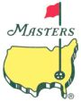
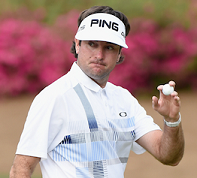

 |
2014
Masters Golf Pool
April 10 - 13, 2014Augusta National Golf Club Augusta, Georgia What a miserable frigging winter. Apologies for my un-Bobby Jones-like language, but I must say that even the president-in-perpituity of Augusta National would’ve muttered ‘fiddlesticks’ had he seen what Mother Nature dished out on to his course this year. And especially what one storm did to the famous Eisenhower tree on 17. Speaking of which, here’s a quick proposition bet: will there or won’t there be a replacement on 17 come tourney time? That will be interesting to see. And here’s another: how long into the moments of the first round telecast will Jim Nantz introduce the schmaltzy story of the Stadlers, father-son, competing together at Augusta for the first time, yada yada. I’ll set the over/under at five minutes, and bet the under. Welcome to the 10th and so far annual Masters Pool! The first major of the year is here! And dare I say spring is here! Enjoy it all. I sure as fiddlesticks will. Fore! Congrats
to Bubba Watson on his second green jacket!
Congrats to Ian Mclean, and team A Handful of Holly, on his win! |
 Bubba Watson 2014 Masters Champ |
| Latest
Pool News: April
13, 2014 – 8::00 PM:
Well, not exactly one for the ages, but still some compelling golf out
there today. Jordon almost looked destioned for greatness on those
early holes, but at the back of my mind I knew he had to play amen
corner and the rest of the back nine. Bubba was solid and confident
throughout. That tee shot on 13 was insane and I thought he had it
pretty much wrapped up at that point. Congrats to Bubba on his second
green jacket. To the pool, and congrats to Ian McLean’s team Handful of Holly. Ian’s a past pool champ, but the green jacket is what he coveted most. Congrats on achieving your dream, Ian. And as an aside, Ian has also broken the jinx of “first in the pool, not winning”. There’s no reason not to get in early now! 2013 PGA Champ, Candice Blake, continue her fine pool performance with a solo second place finish. And third goes to Kenny Roy’s team Habs 9. Congrats to all. All players and team scores available here. I did double-check the scores, but please let me know if you see anything amiss. Thanks for playing everyone and enjoy the spring. It’s finally here! Fore! More news here. |
||